5．三角级数
18世纪的数学家还广泛研究了三角级数，特别是在他们的天文学理论中。这种级数在天文学中之所以有用，显然是由于它们是周期函数，而天文现象大多是周期的。这种研究是一个广泛课题的开始，而这课题的全部深刻意义在18世纪还没有被意识到。开始使用三角级数的问题是插值问题，特别是要确定行星在介于观测到的位置之间的位置。这类级数在偏微分方程的早期工作中也曾用到（看第22章），但奇怪的是这两条思路却一直分开，甚至对同时研究两类问题的人也是这样。
三角级数是指形如
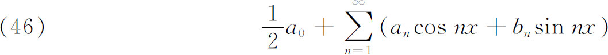
的任一级数，其中an和bn是常数。如果这样一个级数表示一个函数f（x），那么对于n＝0，1，2，…，就有
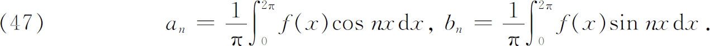
这些系数公式的获得是这理论的主要结果之一，至于这些
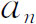
和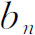
的值，要在什么条件下才确实由上式给出，现在且一概从略。早在1729年，欧拉已经着手研究插值问题。这就是，已知一个函数f（x）在x＝n处的值，其中n是正整数，求f（x）在其他x处的值。在1747年，他把他已经得到的方法用到行星扰动理论中出现的一个函数上，得到了函数的三角级数表示。在1753年(25)，他发表了他在1729年发现的方法。
首先，他处理这样的问题，已知条件是：对每一n，f（n）＝1，而要求一个周期解，对于整数x，它的值为1。他的推理很有趣，因为它反映出那个时期的分析学。他令f（x）＝y，用泰勒定理写出
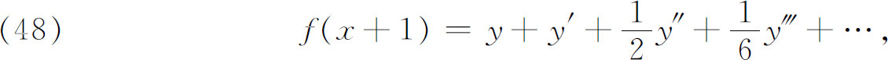
由于f（x＋1）等于f（x），y必须满足无穷阶的线性微分方程
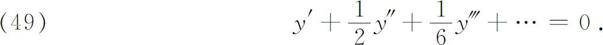
这时，他运用他在1743年（见第21章）发表的解有限阶线性常微分方程的方法。这就是，他建立辅助方程
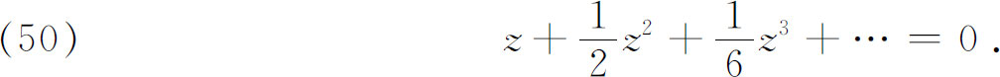
注意到e的级数，这方程就是
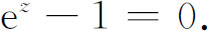
然后，他求这个方程的根。他从方程
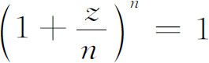
出发，这是一个n次多项式。根据科茨（1722）的一个定理（这个定理欧拉在他的《引论》(26)中也独立地证明过），这个多项式有一次因子z和平方因子
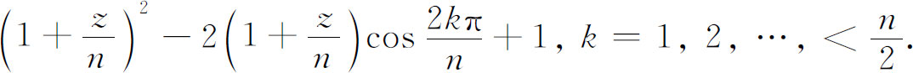
应用联系sinz和cos 2z的三角恒等式，这些因子等于
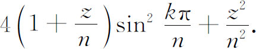
如果我们用
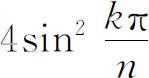
（对相应的k）除每一个因子，（50）的根不受影响，这样平方因子就是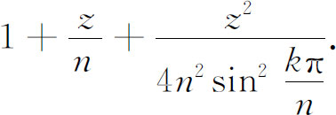
当n＝∞时，
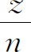
为0。用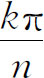
代替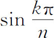
，因子就变成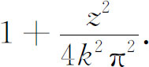
辅助方程（50）的每一个这样的因子都有对应的根
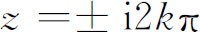
，从而有对应于（49）的积分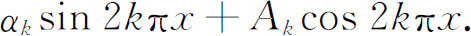
上面提到的一次因子z导致一个积分常数。由于f（0）＝1是一个初始条件，欧拉最后得到
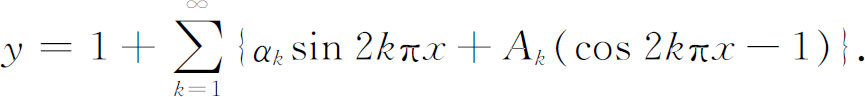
系数
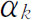
和Ak还得根据条件f（n）＝1（对每个n）而定。这篇文章还包含一个结果，其形式和现在所谓的任意函数的傅里叶展开是一样的，即用积分来决定系数。欧拉特别地证明了函数方程
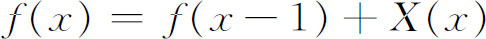
的通解是
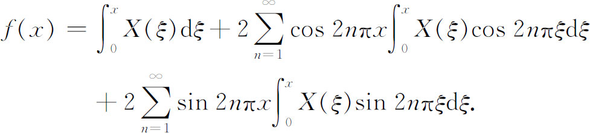
这里，在1750年至1751年，我们已有了一个展成三角级数的函数。欧拉还主张，他的解是插值问题的最一般的解。如果真的如此，它一定包含了用三角级数来表示多项式。但是，我们在第22章将要看到，欧拉在关于弦振动和有关问题的论述中否认了这一点。
在1754年，达朗贝尔(27)研究了这样的问题，就是把两个行星间距离的倒数，展开为原点到行星的两条射线间的夹角的余弦级数，这里也能够找到傅里叶级数的系数的定积分表示。
欧拉在另一工作中，以完全不同的形式，得到了函数的三角级数表示(28)。他从几何级数
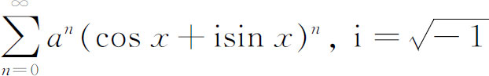
出发，求和，得到
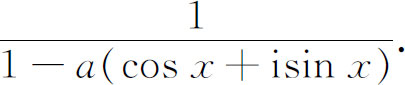
然后他应用以cosnx和sinnx代替cosx和sinx的幂的标准公式（相当于棣莫弗的公式），得到
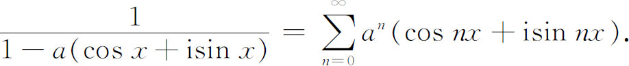
在左边，分子分母同乘以分母的共轭复数，在右边，分出n＝0的项并移至左边，分离实部与虚部，他得到
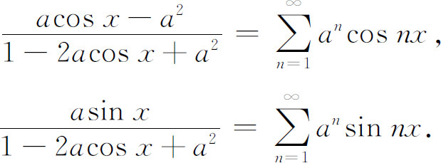
至此，他的结果并不令人吃惊。现在他让
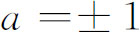
，得到例如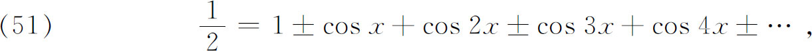
（实际上，这个级数是发散的。）他然后积分，从而得到
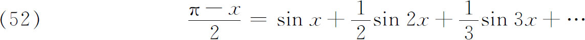
（它对0＜x＜π成立，在x＝0与π时它等于0）和
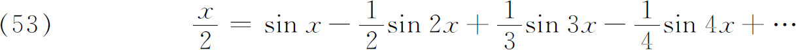
（它在-π＜x＜π收敛）。积分后一个等式，为了定出积分常数，在x＝0计算函数值，得到
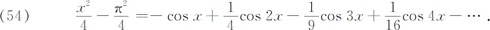
欧拉相信，后面两个级数［它们在-π＜x＜π是收敛的］对所有的x值分别表示了左边的函数。然而，继续微分（51），欧拉推导出了
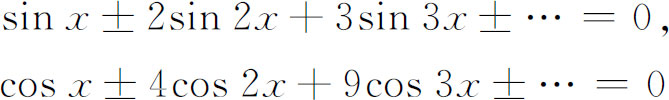
和其他这类等式。丹尼尔·伯努利也曾给出过（52），（53），（54）这样一类表示式，他认为，级数只是在x值的某些区间上表示这些函数。
在1757年，由于研究因太阳而引起的摄动，克莱罗(29)采取了一个大胆得多的步骤。他说，他将把任何一个函数写成形式
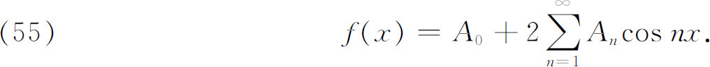
他把问题看作一个插值问题，因此用到函数在x为
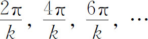
时的值，经过某种处理以后得到
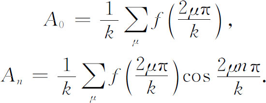
让k变成无穷，克莱罗就得到了
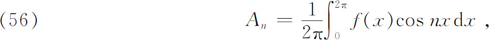
这是An的正确公式。
拉格朗日在他对声的传播的研究中(30)，得到了级数（51），并为它的和是1/2进行辩护。无论欧拉还是拉格朗日，都没有评论过这样一件惊人的事实，这就是他们已经把一个非周期函数表示成三角级数的形式。但是稍后，他们在别的地方确实观察到了这个事实。达朗贝尔经常拿x2/3作为一个不能展成三角级数的函数的例子。拉格朗日在1768年8月15日的一封信(31)中对他说明，x2/3真的能够表示成形式
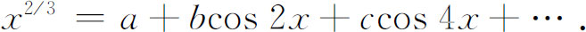
达朗贝尔表示反对并给出相反的论证，譬如说两边的微商在x＝0就不相等。还有，用拉格朗日的方法，人们可以把sinx表示成余弦级数，但sinx是奇函数，而右边却是偶函数，这个问题在18世纪一直没有解决。
在1777年(32)，欧拉在研究天文问题的时候，实际上用三角函数的正交性得到了三角级数的系数，这方法就是我们今天所用的。就是说，从
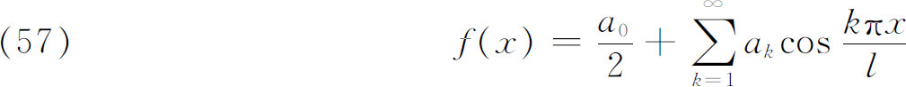
他推导出
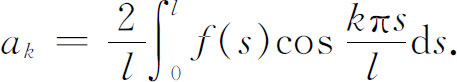
在这篇文章前的一篇文章里，他先用稍微复杂的方式得到这个结果，后来他发现可以直接得到它，就是把（57）的两边乘以
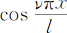
，逐项积分，并应用关系式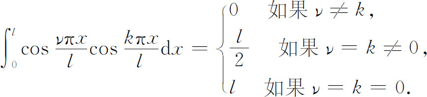
上面关于三角级数的全部工作，处处都渗透了这样一个矛盾现象：虽然当时正在进行着把所有类型的函数都表示成三角级数，而欧拉、达朗贝尔、拉格朗日却始终没有放弃过这样的立场，即认为并非任意的函数都可以用这样的级数表示。这个矛盾的部分解释是：在三角级数被认为是成立的那些地方，总有其他的论据，在某些情况下是物理的论据，似乎能够保证它们的成立。因此，人们就可以随意假设级数，并推导出系数公式。是否任意函数都能用三角级数表示的争论，就成了人们注意的中心了。